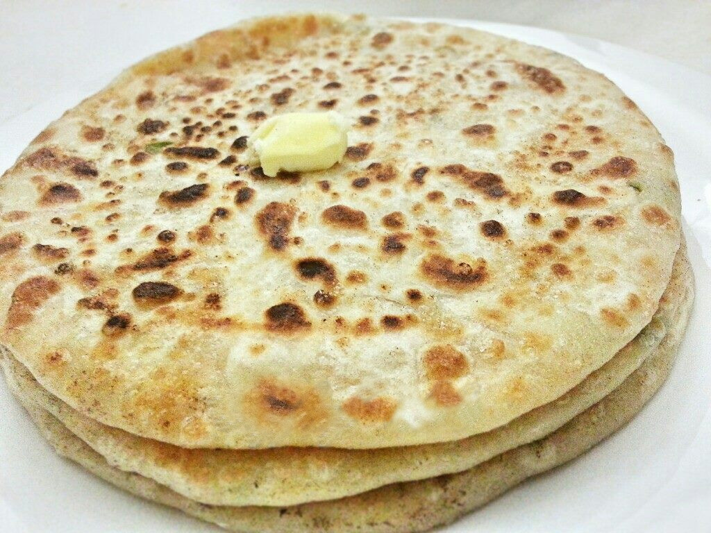

ALOO PARATHA

Description
Aloo paratha is one of the best dish ever invented by humans. It's stuffed bread with mashed potatos.
It's super tasty.
It's generally made in north india and is very common in regular house holds. You can have it with
ketchup or pickles.
Ingredients
- Butter
- Cream
- Onion
- Floor
- Garam Masala
- Potatos
Steps
- Make dough from the floor and water.
- Boil Potatos and mash them.
- Fry the mashed potatos with onion and garam masala in Butter.
- Once the filler(mashed potato) is ready make dough balls.
- The roti made by dough has to be filled with filler and then baked.
- Serve the aloo paratha with cream on it along with achar.